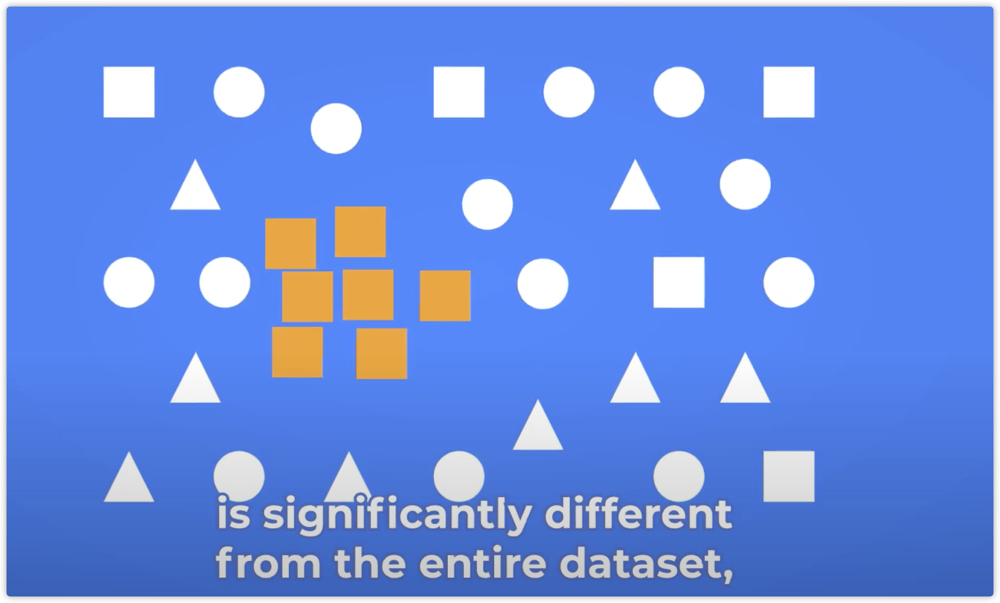

目录
- chapter0 概览
- chapter1 故障发现
- chapter2 故障定位
- chapter3 故障恢复
异常检测背景
运维场景的异常检测，大部分是针对单个指标数据，做异常检测
时序异常检测就是对时间序列数据检测出异常的模式。
但是，很难用一些策略去构建一个通用的异常检测服务，因为监控指标各异（正常模式各异），异常各异（异常类型多种）。其中，比较难识别的几种曲线和异常如下：
下面都是在讲这个方面的。 先看下有那些难点。
异常分类
有几类异常：全局异常，条件异常，联合异常
全局异常点：单个点跟历史所有的数据点比，差异很大，有点像黑天鹅事件。

条件异常： 条件异常(contextual or conditional anomalies)：即相对异常，跟剩下的数据点比比较异常。举个例子：
- 我们办公室出现了一个穿西装打领带的人，会很引人注目。但是放到另外一个context中，比如房屋中介行业很正常。
- 凌晨销量突然升高

联合异常：单个点不异常，但是群体表现出某种特殊模式，就可疑了，例如，一个小区中，有人去医院很正常，但是整个小区的人同时去医院就不正常了。 
异常检测方案
时序异常检测原理，由于异常的判断依据是context，所以如何表达context信息是一个重点：
曲线分类 + 异常检测
如何构建曲线类型特征？
- 周期性： autocorrelation
- 周期offset：高斯核函数拟合分布极值
- 趋势判断：指数滑动平均
- 分析数据极值: 假设检验。
不同的检测策略
针对不同的业务需求，构建检测策略。
一般来说，突变点检测+上升下降屏蔽+时间收敛的策略已经可以覆盖80%的检测指标了。
对于特别重要的指标-业务核心KPI，还是有必要手动配置的。
| 案例 | 指标 | 策略 |
|---|---|---|
| 历史数据有中断 | 在线数据或者其他数据，入库失败 | 先使用基于插值的方法填充后再检测。 |
| 趋势漂移是正常模式 | 游戏收入在开学季趋势漂移[1] | 学习并且剔除这个趋势漂移，检测残差。 |
| 周期性有数据 | 定时任务日志数；礼包成交数量[2] | 检测规律行为数据缺失 |
| 合理范围的突变异常 | 登录在线等周期性曲线 | 检测突变点 |
| 历史数据无规律 | 刚上线的游戏和测试服 | 相对历史分布的极端异常值。 |
| 周期性毛刺点 | 由于数据质量导致的监控指标周期性毛刺，并且间隔不固定 | 先剔除极值再检测 |
| 周期性陡增/降[3] | 业务活动特性导致 | 1.按时间收敛；2. 模式识别[4]: |
| 无历史数据 | 新接业务 | |
| 历史数据无异常 | 新接业务 | 无监督 |
| 不同业务曲线对告警的敏感度不一样 | 在线和cpu | 敏感度 |
- [1]游戏收入在开学季趋势漂移: 进入开学季之后会，游戏在线人数持续走低，业务觉得正常，但是一般算法会告警
- [2]礼包成交数据，礼包只在周末某个固定时间段上架。
- [3]周期性凸起：定时启动任务导致日志数指标定时凸起，业务觉得正常，但是一般算法会告警
- [4]模式识别： 1. 使用dtw衡量两个窗口的距离，兼容偏差； 2 在历史数据中使用滚动窗口的方法，找到一个最近的窗口。
产品运营
用户在使用过程中的疑问
模型开发者
模型开发者关心的是
- 为什么告警？告警时，知道特征有什么变化，在模型输出的时候，把特征也带上
- 屏蔽周期性的告警
模型应用者
模型服务的使用者关心的是
- 应用时的阈值的修改记录在哪看？
- 当前模型是不是最新版本？
- 为什么告警？
- 模型开发者需要在输出中加入告警描述字段
- 可视化saas，对告警的决策逻辑进行解释，eg上下界
- 这么多模型，我该选择哪一个？
- 业务相关的需求：
- 屏蔽周期性的告警。